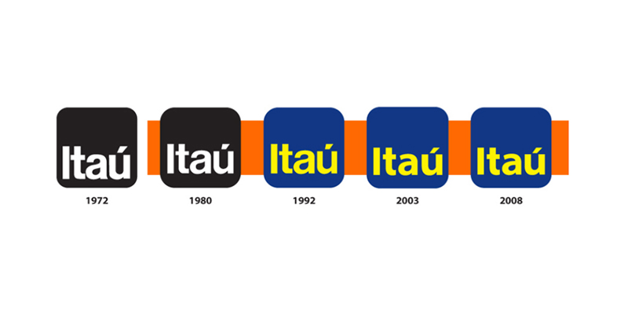

| Página inicial | Trainee | Notícias | Atendimento |
Banco Itaú Unibanco S.A, também conhecido como Itaú, é o maior banco brasileiro, com sede na cidade de São Paulo. Temos áreas focadas em inovação como criação e gestão de produtos, negócios digitais, estratégia de canais e planejamento comercial. Além de uma imensa rede de agências físicas e digitais que atende aos nossos clientes dos diversos segmentos e perfis. Fazemos parte do dia a dia de milhões de pessoas e empresas e por isso estamos presentes em canais físicos (rede de agências), em canais digitais (site e apps), nas maquininhas de cartões, nas soluções de crédito, seguros, veículos e nos mais variados meios de pagamento (iti, cartões, wallets etc). Isso significa que o nosso poder de transformação e possibilidades de atuação são imensuráveis. Para transformar os nossos negócios e a vida das pessoas, estamos em uma jornada de imersão em metodologias ágeis, ciência de dados, novas tecnologias e modelos organizacionais colaborativos e diversos. Tudo isso para encantar os nossos clientes com uma experiência cada vez mais surpreendente e aderente ao que eles realmente precisam. Queremos continuamente entender o que o nosso cliente está buscando... Vamos nessa com a gente? Se você é fanático por desafios e quer ter uma carreira acelerada que impacte a vida de milhões de pessoas todos os dias.
|  | 1972 - Quando a marca se consolidou, foram feitas duas opções: um quadrado de cantos retos e o outro de cantos arredondados. Quem deu a palavra final foi a mulher de Olavo Setubal.
1980 - O logotipo não passou por mudanças drásticas, mas teve algumas atualizações. Em 1980, a fonte utilizada passou a ser a Helvética, considerada mais leve. 1992 Anos depois, veio uma das principais alterações: a introdução de cores, o que, a essa altura, era raro entre instituições financeiras. A ideia era representar a multiplicidade do banco. 2003 A fonte passou por mais uma mudança, desta vez para modernizar a marca e facilitar a visualização em formatos digitais, em computadores e smartphones. 2008 O desenho se manteve praticamente inalterado até hoje. Quando houve a fusão com o Unibanco, estudos, conduzidos por um ano, concluíram pela manutenção da marca. |